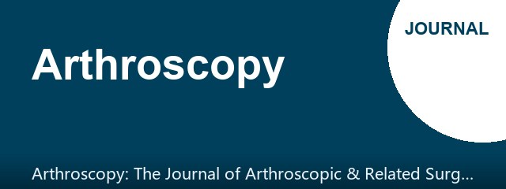
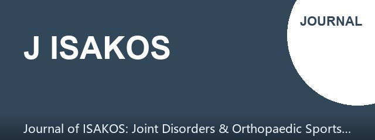

Remplissage成本阈值：DTD 8mm
SPORTS MEDICINE & ARTHROSCOPY DIGEST
肩关节不稳：复发风险阈值约28%，Remplissage仅对DTD≤8mm具成本效益
第 49 期 · 2026-11-24
11月23日 10 本核心期刊新收录 22 篇 → 精选 14 篇（剔除编辑评论/来信/基础研究）
▍编者按 · EDITOR’S NOTE
本期聚焦肩关节不稳的精准决策。基于加拿大单支付方体系的决策分析显示，辅助Remplissage在离轨与近轨病变中可节省成本，而在轨病变（DTD>8mm）则增加费用；成本中性复发风险阈值约28%，对应DTD约7-8mm。同期韩国全国队列提示普通人群肩关节脱位后复发风险低于既往高危临床队列的估计。这提示临床应基于DTD分层而非一概而论地附加Remplissage，同时需结合人群基线风险进行个体化咨询。
▍今日主打 · TODAY’S FOCUS
肩关节
决策分析模型 · 成本阈值分析 · 5年时间跨度 · 加拿大单支付方 · Decision-Analytic Model · Cost-Threshold Analysis · 5-Year Horizon · Canadian Single-Payer
辅助Remplissage成本效益取决于DTD：阈值约28%复发风险
Remplissage for All? A Cost-Threshold Analysis of Adjunctive Remplissage by Glenoid Track Status.
J Shoulder Elbow Surg · 2026-11-23 · 决策分析成本阈值模型 · PMID 43072645
一句话结论：在加拿大单支付方体系下，辅助Remplissage在离轨（≤0mm）和近轨（0-8mm）病变中节省成本，在轨（>8mm）病变中增加成本；成本中性复发风险阈值约28%，对应DTD约7-8mm。
要点：
①离轨病变增量成本-$4,944，近轨-$585，在轨>8mm +$944；
②加权总体增量成本中性（+$1）；
③概率分析显示Remplissage平均成本更低（-$92）且复发减少；
④成本中性阈值约28%，跨队列一致。
对临床的启示：该研究为肩关节不稳手术决策提供了量化经济学依据：对DTD≤8mm（离轨/近轨）患者，辅助Remplissage不仅降低复发，且节省成本；而对DTD>8mm的在轨病变，附加Remplissage增加费用，应审慎选择。临床可结合患者基线复发风险（如年龄、运动水平）与DTD分层共同决策。局限在于模型基于加拿大单支付方体系与文献推导的概率，外推至其他医疗体系需谨慎；且未纳入长期骨关节炎结局与翻修成本。
原文 / Source：https://doi.org/10.1016/j.jse.2026.11.051
· · · · ·
▍其余 13 篇 · 一屏看完

肩关节
肩关节脱位后复发率与手术利用率：全国性队列研究
Incidence, Treatment Pathways, and Risk Factors for Redislocation After Shoulder Dislocation: A Nationwide Claims-Based Study.
J Shoulder Elbow Surg · PMID 43072644
摘要（完整翻译）：关于肩关节脱位后复发的证据主要来自经过选择的高风险临床队列，这可能高估了一般人群中的复发风险和手术利用率。具有长期随访、能够覆盖全部患者谱系的全国性人群研究仍然有限。本研究旨在全国性人群队列中验证先前对肩关节脱位后结局的认识。利用韩国国民健康保险服务理赔数据库，我们识别了2011年1月1日至2017年12月31日期间年龄10-49岁的61,077例初次肩关节脱位患者。患者随访至2023年12月31日（6-13年）。治疗路径分为单次发作非手术治疗、复发非手术治疗、早期手术稳定或复发后手术稳定。（1）总体发病率为29.8/10万人年，在20-29岁男性中达到峰值（85.0/10万）。（2）在61,077例患者中，44,145例（72.3%）接受非手术治疗；39,102例（64.0%）在随访期间无再脱位。16,932例（27.7%）接受了手术稳定。与单次发作非手术治疗的患者相比，接受早期手术稳定的患者更年轻（平均26.8岁 vs 29.6岁），且男性比例更高（89.9% vs 81.3%）。（3）与单次发作非手术治疗路径相比，复发路径与年轻年龄的关联最强；较高收入的关联较小，而性别无独立关联……
启示：该研究提示，在一般人群中肩关节脱位后仅约三分之一患者出现再脱位，手术稳定率约28%，低于高风险队列的既往估计。临床决策时应避免过度推演复发风险，对年轻男性可更积极评估手术指征，同时需结合患者功能需求与偏好共同决策。
原文：https://doi.org/10.1016/j.jse.2026.11.047
· · · · ·

肩关节
关节镜辅助下斜方肌下束转移优于背阔肌转移：中期随访
Arthroscopy-Assisted Lower Trapezius Tendon Transfer Provides Superior Midterm Outcomes and Return to Work/Sport Compared With Latissimus Dorsi Tendon Transfer for Irreparable Posterosuperior Rotator Cuff Tears.
Arthroscopy · PMID 43070027
摘要（完整翻译）：比较关节镜辅助下斜方肌下束转移（aLTT）与关节镜辅助下背阔肌转移（aLDT）治疗不可修复性后上肩袖撕裂患者的中期重返工作（RTW）和重返运动（RTS）率、临床结局、肌肉力量及影像学生存率。这项回顾性比较研究纳入2012年1月至2020年10月期间因后上不可修复性肩袖撕裂接受aLDT或aLTT的患者，至少随访5年。主要结局为RTW和RTS率。次要临床结局包括患者报告结局指标、主动活动范围及主动活动范围力量。影像学结局包括肩肱间距和Hamada分级。移植物完整性通过术后磁共振成像评估。采用多因素logistic回归分析确定与RTW和RTS相关的因素。共94例患者根据手术方式分为2组：aLDT组（n=44）接受aLDT，aLTT组（n=50）接受aLTT。aLTT组的RTW率（90.0% vs 72.7%，P=.035）和RTS率（88.6% vs 63.3%，P=.020）显著高于aLDT组。两组术后临床结局均显著改善。术后Constant评分（50.7±11.0 vs 64.8±12.8，P<.001）、美国肩肘外科医师（ASES）评分（70.5±10.8 vs 83.8±11.8，P<.001）、需要外旋的日常生活活动（ADLER）评分（20.6±5.7 vs 25.7±3.……
启示：对于不可修复性后上肩袖撕裂，aLTT在中期随访中显示出更高的重返工作和重返运动率及更优的临床评分，尤其适用于对功能要求较高的患者。临床选择术式时应综合考虑患者年龄、功能需求及术者经验，并注意该研究为回顾性设计、样本量有限。
原文：https://doi.org/10.1002/arj.70753
· · · · ·
肩关节
Bristow与Latarjet术式在橄榄球运动员中的自身对照比较
Comparing Bristow and Latarjet procedures for anterior shoulder instability in competitive rugby players: a unique within-subject clinical analysis.
J Shoulder Elbow Surg · PMID 43068397
摘要（完整翻译）：前肩关节不稳是橄榄球等碰撞性运动中的重要问题，常需手术干预。Bristow和Latarjet手术是常用的喙突转移技术，常与Bankart修复联合进行；然而，在同一受试者中直接比较其临床结局的研究尚未探索。本研究旨在比较在双侧肩关节均接受过两种手术的竞技橄榄球运动员中Bristow和Latarjet手术的临床结局。我们假设Bristow手术会产生更优的患者报告结局。2010年至2022年间，503例肩关节接受了喙突转移联合Bankart修复术。其中，10名橄榄球运动员（20例肩关节）一侧肩关节接受Bristow手术，另一侧接受Latarjet手术，被回顾性分析。临床评估包括术后活动范围、临床评分结局（美国肩肘外科医师评分、Rowe肩关节不稳评分、西安大略肩关节不稳指数（WOSI）及满意度）、复发率、残余恐惧感以及术后2年以上需要注射治疗的疼痛，并在两种手术之间进行比较。此外，使用计算机断层扫描分析术后移植骨愈合和吸收情况。两种手术均使临床评分显著改善。然而，末次随访时Bristow侧的WOSI指数显著更优（96±100 vs 373±376，P=.014）。WOSI的特定子域，……
启示：在竞技橄榄球运动员中，Bristow与Latarjet手术均能显著改善临床评分，但Bristow侧WOSI指数更优，提示患者主观不稳感受可能更轻。临床中可结合患者运动需求与术者经验选择术式，但需注意该研究样本量小（10例患者）、为回顾性自身对照设计，结论需谨慎推广。
原文：https://doi.org/10.1016/j.jse.2026.11.007
· · · · ·

膝关节
针式关节镜下半月板部分切除术后短期结局更优
Needle arthroscopy is associated with improved short-term outcomes after partial meniscectomy compared with conventional arthroscopy.
J ISAKOS · PMID 43066984
摘要（完整翻译）：比较接受膝关节针式关节镜与传统关节镜下半月板部分切除术患者的短期结局。这项回顾性队列研究纳入2021年10月至2025年4月期间因孤立性半月板撕裂接受初次关节镜下半月板部分切除术的成年患者，手术采用针式或传统关节镜。患者报告结局指标包括膝关节损伤和骨关节炎结局评分-简版（KOOS Jr）、欧洲生活质量（QOL）、整体身体健康评分（GPH）、整体心理健康评分（GMH）以及北美脊柱学会（NASS）患者满意度指数，在基线（T0）、术后84天（T1）、168天（T2）和336天（T3）进行测量。记录术后30天内的并发症。采用线性混合模型（LMM）、logistic回归模型和应答者分析评估统计学显著性和最小临床重要差异（MCID）。共在574例患者中实施了581例关节镜手术（160例针式，421例传统）。针式关节镜与T1（Δ8.33；p<0.0001）、T2（Δ6.61；p=0.0007）和T3（Δ10.86；p<0.0001）时KOOS Jr改善显著更大相关。QOL和GPH也观察到类似的早期优势，针式组QOL在T1（p<0.0001）和T3（p=0.008）更高，GPH在T1（p<0.0001）、T2（p=0.034）和T3（p=0.002）更高。这些差异具有临床意义，校正MCID比值比（adjORs）在T1时KOOS Jr显著 favoring 针式关节镜（adjOR=2……
启示：针式关节镜下半月板部分切除术在术后短期（3-12个月）可带来更大的KOOS Jr、生活质量和整体身体健康改善，且达到MCID的几率更高。对于适合局部麻醉、微创操作的患者，可考虑针式关节镜以优化早期康复体验，但需注意其学习曲线及设备可及性。
原文：https://doi.org/10.1016/j.jisako.2026.101253
📥 开放获取 · 免费全文（复制下方链接到浏览器可下载 PDF）：
https://doi.org/10.1016/j.jisako.2026.101253
· · · · ·

运动防护
青少年运动员上肢功能测试常模阈值：力量指标
Normative Thresholds for Upper Extremity Functional Testing in Adolescent Athletes: Outcome Measures of Strength.
Sports Health · PMID 43069560
摘要（完整翻译）：使用上肢功能测试指导康复、降低损伤风险和辅助重返赛场决策的做法日益增多。然而，这些测试的评估主要集中于大学和成年运动员。常模阈值会因优势侧而异，优势肢体的数值更强。横断面研究。III级。报告参与接触性或过顶上肢运动的健康青少年运动员按随机顺序完成上肢功能测试组合。在俯卧位使用手持测力计收集内旋（IR）和外旋（ER）力量以及运动肩（ASH）测试。对所有结局指标计算描述性统计，并分别对优势（DOM）和非优势（NON）肢体进行分析。计算第15百分位数并用于建立表现阈值。使用Wilcoxon符号秩检验比较肢体间力量指标，并计算效应量。计算描述性统计以探索性比较男性和女性以及基于运动的表现。共纳入156名参与者（78.2%男性；60.2%接触性运动员；年龄16.5±1.2岁；体重162.8±39.2磅）进行分析。呈现了各项测试的常模和百分位阈值，肩部力量阈值在DOM肢体 consistently 更高。DOM内旋力量显著大于NON内旋力量（P=0.002）。ASH表现在DOM肢体更高，对于……
启示：该研究提供了青少年运动员上肢力量测试的常模和第15百分位阈值，提示优势侧肩部力量普遍更高，临床评估时应以对侧为参照并结合优势侧校正。可用于康复进程监测和重返运动决策，但需注意样本以男性为主，女性及不同运动项目阈值需进一步验证。
原文：https://doi.org/10.1177/19417381261506182
· · · · ·
膝关节
滑车发育不良中髌股软骨损伤与轨迹不良相关而非脱位负荷
Patellofemoral Cartilage Lesions in Trochlear Dysplasia by Radiographic and Magnetic Resonance Imaging Analysis Are Associated With Maltracking Rather Than Patellotrochlear Mismatch or Dislocation Burden.
Arthroscopy · PMID 43068466
摘要（完整翻译）：确定接受髌骨稳定手术的滑车发育不良（TD）患者中髌股（PF）软骨缺损的患病率，并识别与这些病变相关的解剖和临床危险因素。回顾性分析2010-2020年因PF不稳接受手术、且有术前侧位X线片和磁共振成像的连续TD膝关节。PF形态包括髌骨尺寸、Caton-Deschamps指数、髌骨滑车指数、Merchant适合角、髌骨倾斜角、滑车沟角/深度、滑车上骨赘高度、胫骨结节-滑车沟（TT-TG）距离、胫骨结节-后交叉韧带距离、矢状位TT-TG以及胫股旋转。记录全层（国际软骨修复学会4级）髌骨和滑车缺损。多变量回归模型识别独立关联，阈值分析使用文献中髌骨不稳的截断值。在363个膝关节中，91个（25.1%）显示髌骨全层软骨缺损，而21个（5.8%）有滑车软骨损伤，主要见于TD B型和D型（髌骨缺损：P=.082；滑车缺损：P=.003）。髌骨脱位次数或Wiberg髌骨形态与TD类型的任何组合（代表PF形状不匹配）均与软骨缺损增加无关（无统计学意义）。滑车上骨赘高度、Merchant适合角和年龄与PF软骨缺损独立相关（均P<.05）。使用文献阈值，滑车上骨赘高度≥5……
启示：在滑车发育不良患者中，髌股软骨缺损更与轨迹不良（如滑车上骨赘高度、Merchant适合角）相关，而非脱位次数或髌骨滑车形状不匹配。临床评估应重点关注轨迹相关影像学参数，对滑车上骨赘高度≥5 mm等高危患者加强软骨保护策略，但需注意研究为回顾性设计。
原文：https://doi.org/10.1002/arj.70738
· · · · ·
膝关节
股骨外侧髁为受区与部分PROM差异相关但不影响移植物翻修或失败
Lateral Femoral Condyle Osteochondral Allograft Transplantation Location for Osteochondral Defects of the Knee Is Associated With Selected Patient-Reported Outcome Differences but Not With Graft Reoperation or Failure.
Arthroscopy · PMID 43070771
摘要（完整翻译）：目的：比较孤立性股骨内侧髁（MFC）与股骨外侧髁（LFC）骨软骨同种异体移植（OCA）术后患者报告结局指标（PROMs）、达到临床显著结局的比例、再手术及移植物失败情况。方法：回顾性分析2003年至2023年间在单一软骨修复中心连续接受OCA的患者。纳入标准为接受孤立性MFC或LFC OCA移植，且具有术前及术后至少2年的PROMs。若有多份术后PROMs，采用距2年或以上最近的一次评分。队列特异性最小临床重要差异（MCID）阈值按变化评分标准差的一半计算。多变量线性与逻辑回归模型校正了移植物位置、基线PROM评分、随访时间、年龄、性别、工伤赔偿状态、运动员状态及侧别。再手术时间采用Kaplan-Meier/log-rank分析及Cox回归比较。结果：共纳入141例患者（MFC：n=79；LFC：n=62）。115例患者有随访数据，平均随访6.2±3.0年（范围2.0-16.3年），MFC与LFC队列间无差异（6.2±2.9 vs 6.2±3.2年；P=.963）。在校正基线PROM评分、随访时间、年龄、性别、工伤赔偿状态、运动员状态、侧别及同侧半月板同种异体移植状态的线性模型中，LFC受区与更高的膝关节损伤和骨关节炎结局评分（K…（摘要截断）
启示：提示临床在选择OCA受区时，LFC部位可能在部分PROM上表现更优，但再手术率与移植物失败率不受位置影响；术前咨询可据此设定预期，但需注意摘要数据截断及回顾性设计的局限，长期功能差异的临床意义仍需完整数据确认。
原文：https://doi.org/10.1002/arj.70857
· · · · ·
膝关节
局部软组织厚度与手工内侧Oxford单髁置换假体位置不良无关
Local soft tissue thickness is not associated with radiographic component malpositioning in manual medial Oxford unicompartmental knee arthroplasty.
J ISAKOS · PMID 43066985
摘要（完整翻译）：准确的假体位置对单髁膝关节置换术（UKA）的成功至关重要。尽管肥胖历来被视为UKA的相对禁忌证，但以局部软组织厚度（LSTT）反映的肥胖是否影响假体位置仍不明确。本研究旨在评估手工内侧UKA术后区域LSTT与影像学假体位置之间的关联。方法：回顾性筛选2013年至2023年间在一家学术中心使用单一假体系统接受初次手工内侧UKA的连续患者。采用标准化术前与术后X线片评估三个解剖层面的LSTT：踝部脂肪指数、胫前皮下脂肪（PSF）及膝部脂肪指数（KAI）。影像学假体位置通过股骨内翻/外翻角、股骨屈曲/伸展角、胫骨内翻/外翻角及胫骨后下倾斜角（TPIT）评估。所有测量由两名盲法观察者独立完成。LSTT与假体位置参数的相关性采用Spearman秩相关系数评估。将所有假体位置参数均位于厂商推荐影像学范围内的患者与至少一项参数超出推荐范围的患者进行LSTT比较，采用Mann-Whitney U检验。结果：共99例患者（女性41例，41.4%）符合纳入标准。总体而言，19例患者（19.2%）至少有一项假体位置参数超出厂商推荐…（摘要截断）
启示：提示局部软组织厚度不应作为手工内侧Oxford UKA假体位置不良的预测因素，肥胖患者不必仅因软组织厚度而被排除；但约两成患者存在至少一项参数超出推荐范围，术中仍应严格核对假体位置，并注意摘要截断与单中心回顾性设计的局限。
原文：https://doi.org/10.1016/j.jisako.2026.101254
📥 开放获取 · 免费全文（复制下方链接到浏览器可下载 PDF）：
https://doi.org/10.1016/j.jisako.2026.101254
· · · · ·

膝关节
四股半腱肌自体肌腱双悬吊固定ACL重建的七阶段技术描述
Arthroscopic Quadrupled Semitendinosus Autograft Anterior Cruciate Ligament Reconstruction With Suspensory Fixation.
Arthrosc Tech · PMID 43069894
摘要（完整翻译）：本研究描述了一种结构化的双悬吊技术，用于使用4股半腱肌自体肌腱进行腘绳肌前交叉韧带重建，并借助认知任务分析框架将手术拆解为技术步骤与决策点。本研究将前交叉韧带重建分为7个阶段：（1）麻醉下查体与体位摆放；（2）肌腱获取与准备；（3）诊断性关节镜；（4）股骨隧道制备与定位；（5）胫骨隧道制备与定位；（6）肌腱穿过隧道；（7）肌腱张紧与固定。每个阶段均包括书面说明、视听指导、决策点以及常见陷阱与解决方案，使受训者能够独立、结构化地学习。
启示：该分阶段认知任务分析框架适合作为住院医师与进修医师的结构化教学工具，可提高手术步骤的可重复性；临床应用时需注意4股半腱肌直径是否满足隧道匹配，以及双悬吊固定下隧道定位与张紧顺序对移植物初始稳定性的影响。
原文：https://doi.org/10.1002/atn2.70344
📥 开放获取 · 免费全文（复制下方链接到浏览器可下载 PDF）：
https://doi.org/10.1002/atn2.70344
· · · · ·
髋关节
预置松弛后可控张紧的无结髋臼盂唇修复技术
Knotless Hip Labral Repair With Tensioning Set Up by Intentional Slack.
Arthrosc Tech · PMID 43066123
摘要（完整翻译）：盂唇修复已成为恢复髋臼盂唇撕裂患者解剖结构与功能的首选方法。然而，锚钉置入过程中过度张紧可导致盂唇外翻并丧失吸附密封。我们描述了一种简单且可重复的技术，在锚钉置入前有意引入松弛，从而实现可控张紧以恢复原生盂唇轮廓与吸附密封。在缝线绕过盂唇后，于锚钉置入前将探针置于修复缝线之上，有意引入松弛。随后置入锚钉，取出探针后即可显露有意保留的松弛。缝线先在牵引状态下初步张紧，释放牵引后再进行最终张紧。每个锚钉均重复此顺序。完成修复后行关节镜下评估，并实施吸附试验以确认吸附密封恢复。本技术可降低修复过程中过度张紧与盂唇外翻的风险。该技术可无缝整合入标准髋关节镜流程，使术者能够精确控制盂唇位置与张力。
启示：适用于髋臼盂唇撕裂行无结修复的病例，尤其需避免盂唇外翻与吸附密封丧失者；操作要点为锚钉置入前用探针预置松弛、牵引下初步张紧后释放牵引再最终张紧，并以吸附试验验证；学习曲线与长期愈合效果尚待研究。
原文：https://doi.org/10.1002/atn2.70357
📥 开放获取 · 免费全文（复制下方链接到浏览器可下载 PDF）：
https://doi.org/10.1002/atn2.70357
· · · · ·
踝足
全关节镜下分期基质诱导自体软骨细胞植入治疗距骨骨软骨损伤
All-Arthroscopic Staged Matrix-Induced Autologous Chondrocyte Implantation for Osteochondral Lesions of the Talus.
Arthrosc Tech · PMID 43066436
摘要（完整翻译）：距骨骨软骨损伤常引起踝关节疼痛、肿胀与功能受限，非手术治疗或既往手术后可能出现持续症状或早期退变改变。对于较大缺损、既往手术失败或功能需求高的患者，基于软骨细胞的修复可能提供更接近透明软骨的修复。本技术说明描述了一种分期、全关节镜下的策略，采用基质诱导自体软骨细胞植入治疗距骨骨软骨损伤，旨在直视下完成病灶评估与准备并实现精确的移植物植入。
启示：适用于较大距骨骨软骨缺损、既往手术失败或高功能需求患者；两期手术需严格把握适应证并做好患者依从性管理，关节镜下病灶准备与移植物贴合是疗效关键，长期软骨质量与返运动水平仍需随访验证。
原文：https://doi.org/10.1002/atn2.70310
📥 开放获取 · 免费全文（复制下方链接到浏览器可下载 PDF）：
https://onlinelibrary.wiley.com/doi/pdfdirect/10.1002/atn2.70310
· · · · ·
肩关节
自体肩胛冈骨 graft 联合肱二头肌长头腱转位重建肩关节不稳
Arthroscopic Glenoid Reconstruction Using Autologous Scapular Spine Bone Graft and Long Head Biceps Tendon Transposition for Shoulder Instability and Subcritical Glenoid Bone Defects.
Arthrosc Tech · PMID 43069888
摘要（完整翻译）：传统自体骨移植治疗复发性肩关节前脱位伴肩胛盂骨缺损会对供区造成显著创伤，导致慢性疼痛、神经血管损伤及功能障碍。因此，我们介绍一种技术：从同侧肩胛冈获取自体骨用于肩胛盂骨移植，并结合肱二头肌长头腱应用动态吊带技术。该技术主要针对高运动需求患者的亚临界肩胛盂骨缺损。
启示：适用于高运动需求、亚临界肩胛盂骨缺损的复发性前脱位患者；同侧肩胛冈取骨可减少传统髂骨供区并发症，联合肱二头肌长头腱动态吊带可增强前方稳定性，但需注意供区局部解剖与神经血管保护，其骨愈合与返运动结局尚待临床随访。
原文：https://doi.org/10.1002/atn2.70280
📥 开放获取 · 免费全文（复制下方链接到浏览器可下载 PDF）：
https://doi.org/10.1002/atn2.70280
· · · · ·
膝关节
自体骨柱取骨回植用于前交叉韧带重建胫骨隧道管理
Autologous Bone Plug Harvest and Reimplantation for Tibial Tunnel Management in Anterior Cruciate Ligament Reconstruction.
Arthrosc Tech · PMID 43066105
摘要（完整翻译）：本技术说明描述了一种改良的前交叉韧带重建技术，旨在优化胫骨隧道的生物学环境。与传统技术不同，该方法采用空心环钻获取完整、全长度的自体骨圆柱。该策略有效保留了局部骨量与原生残端，同时简化了移植物通道的通过。值得注意的是，所获取的骨柱经修整尺寸后原位回植，以尽量减少胫骨远端隧道的无效腔。通过确保移植物与骨直接贴合，并利用骨柱的中心通道进行固定，该方法促进了“多维”整合。因此，它提供了一种生物学、成本效益良好的替代方案，可减轻常与合成填充物相关的隧道扩大风险。
启示：启示：适用于需行前交叉韧带重建、尤其关注胫骨隧道扩大与骨量保留的患者。操作要点为空心环钻取全长自体骨柱、修整后原位回植填充远端隧道无效腔，并经骨柱中心通道固定以获得移植物-骨直接贴合。注意骨柱获取需保证皮质完整与尺寸匹配，技术学习曲线及长期隧道形态与愈合数据尚待验证。
原文：https://doi.org/10.1002/atn2.70352
📥 开放获取 · 免费全文（复制下方链接到浏览器可下载 PDF）：
https://onlinelibrary.wiley.com/doi/pdfdirect/10.1002/atn2.70352
· · · · ·
💬 一起聊聊：您在临床中是否会依据DTD分层（≤8mm vs >8mm）来决定是否附加Remplissage？欢迎分享您的决策经验。
本内容由 AI 辅助整理，仅供学术交流参考，观点与数据请以原文为准，不构成诊疗建议。文献题录与摘要来源：PubMed。
— 运动医学 · 关节镜文献速览 · 第 49 期 —